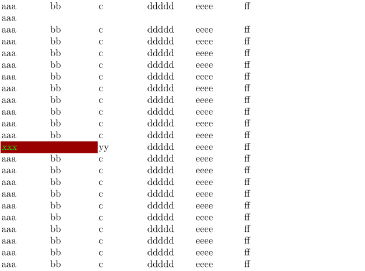

< Tables
There's no documentation about this mode besides in the sources (tabl-ltb.mkii/tabl-ltb.mkiv). It is for huge tables that can spread over several pages horizontally and vertically. It can repeat not only rows (headers, footers) but even columns.
-
\setupcolors[state=start] \setuplinetable[n=6,m={2,2,2},regels=25] \startlinetable \NC aaa\crlf aaa \NC bb \NC c \NC ddddd \NC eeee \NC ff \NC \NR \dorecurse{10} {\NC aaa \NC bb \NC c \NC ddddd \NC eeee \NC ff \NC \NR} \stoplinetable \startlinetable \NC[style=slanted, color=green, background=color, backgroundcolor=darkred, nx=2, uitlijnen=middle] xxx \NC yy \NC ddddd \NC eeee \NC ff \NC \NR \dorecurse{10} {\NC aaa \NC bb \NC c \NC ddddd \NC eeee \NC ff \NC \NR} \stoplinetable
- 
Another sample, posted by Hans to the mailing list on 2004-12-14:
-
\setuplinetable[n=6,lines=40] \setuplinetable[c][1] [width=2cm,background=color,backgroundcolor=red] \setuplinetable[c][4] [width=3cm,background=color,backgroundcolor=yellow] \setuplinetable[c][6] [width=3cm,background=color,backgroundcolor=magenta] \setuplinetable[r][odd] [background=color,backgroundcolor=gray] \setuplinetable[r][even][background=color,backgroundcolor=green] \starttext \showframe \showstruts \setupcolors[state=start] \startlinetable \dorecurse{5}{\NC aaa\crlf aaa \NC bb \NC c \NC ddddd \NC eeee \NC ff} \NC \NR \dorecurse{20}{\dorecurse{5}{\NC aaa \NC bb \NC c \NC ddddd \NC eeee \NC ff} \NC \NR} \stoplinetable \stoptext
-

| TODO: write documentation (See: To-Do List) |